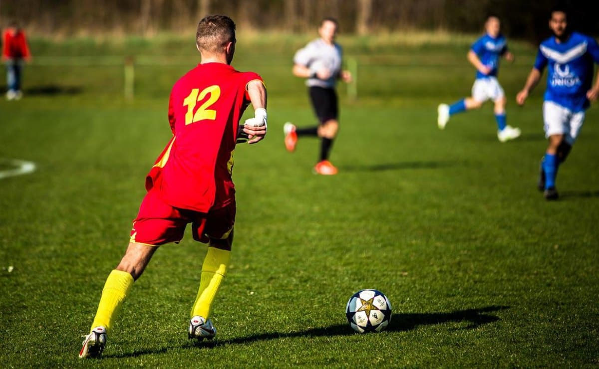
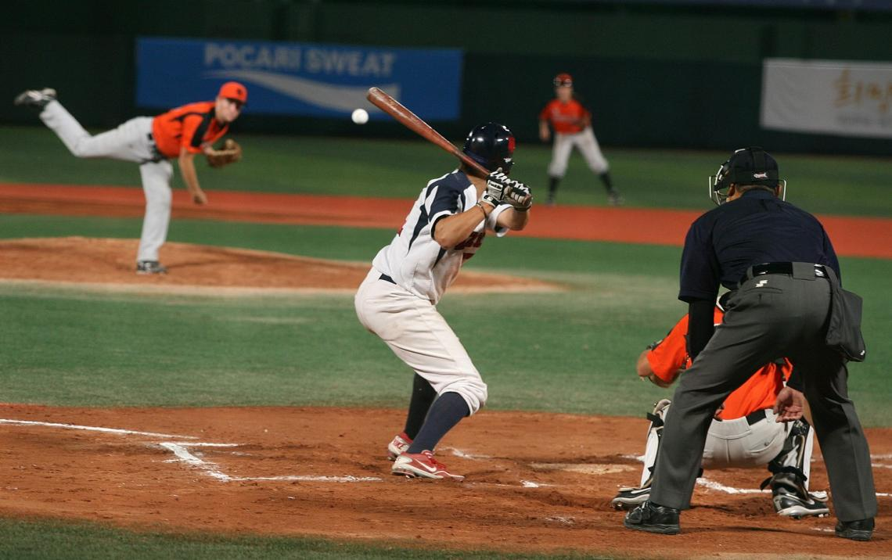
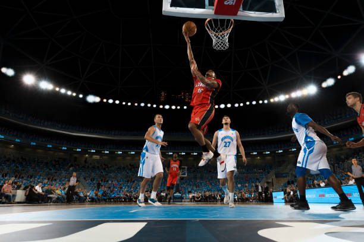

El fútbol, también conocido como soccer en algunos países, es uno de los deportes más populares del mundo. Se juega entre dos equipos de once jugadores cada uno, con el objetivo de marcar goles en la portería del equipo contrario. El juego se desarrolla principalmente con el uso de los pies, aunque los jugadores también pueden usar otras partes del cuerpo excepto las manos y los brazos (a excepción de los porteros, que pueden usar sus manos dentro del área de penal).
El béisbol es un deporte de equipo que se juega con un bate y una pelota entre dos equipos de nueve jugadores cada uno. Es popular en América del Norte, América Central, el Caribe y partes de Asia. El objetivo principal del juego es anotar carreras golpeando una pelota lanzada con un bate y corriendo alrededor de una serie de bases colocadas en un campo de forma diamante.
El baloncesto es un deporte de equipo que se juega entre dos conjuntos de cinco jugadores cada uno. El objetivo del juego es anotar puntos lanzando un balón de baloncesto a través del aro del equipo contrario, que está montado en una altura de 3.05 metros sobre el suelo en un tablero rectangular.
